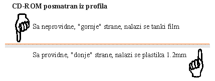
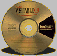

Od èega je napravljen
To je disk od providne polikarbonatne plastike debljine 1.2 mm i preènika 12 cm. Sa jedne strane je presvuèen super tankim aluminijumom, koji se èak providi. Kao za¹tita od o¹teæenja, lakom se premazuje strana koja dolazi u kontakt sa nama (strana na kojoj je od¹tampana firma koja je izradila disk i ostalo). To se odnosi na fabrièki snimljene diskove. Podaci su sme¹teni izmeðu plastike od 1.2mm i tankog aluminijumskog filma.
Znaèi ako makar malo zagrebete taj Alu-film, ostaæete bez podataka na tom delu CD-ROM-a. Ako Vam se desi da o¹tetite poèetak zapisa, uni¹tiæete i FAT zapis pa neæete moæi da proèitate ni¹ta sa diska.
Metalni film mo¾e biti srebrne boje ako je sniman fabrièki i zlatan ako je za snimanje u pisaèu CD-ROM diskova.
Po samom metalnom filmu, pi¹e se laserskim snopom, tako da je zapis u stvari serija udubljenja i nedirnutog filma u spirali poèev¹i od centra diska ka periferiji. Po¹to se u CD èitaèu laserski èitaè nalazi ispod tacne u koju stavljamo CD-ROM, laserski snop znaèi prolazi KROZ plastiku da bi proèitao zapis. Po¹to sam fotograf u du¹i i telu, savr¹eno mi je jasno za¹to je to tako. Ukoliko se desi da malo o¹tetite plastièni disk, èak i da ga zagrebete, to æe ostati van fokusa laserskog snopa. Znaèi za¹titite svoj disk sa neprovidne strane i biæete mirni jo¹ dugo vremena (10 god.).
Svi dosada¹nji "pisaèi" snimaju na disk dvostrukom brzinom. Ukoliko Vam se desi da neki disk ne mo¾ete da proèitate na 6x ili 8x CD drajvovima poku¹ajte sa sporijim.
Proizvoðaei tvrde da disk mo¾e èuvati informacije celih 100 godina. Struèni, nezavisni, poznavaoci tvrde da je realno oèekivati 10-tak godina. Za to vreme ne smete pisati po disku. Ja svoje CD-ROM diskove èuvam tako ¹to preko neprovidne strane prelepim samolepljivi papir koji pre toga oslikam u Photo Shop-u. Lepo izgleda, lako se prepoznaje, a i podaci su mnogo sigurniji. Normalno, lepak na tom papiru ne sme biti jak da ne bi pojeo zapis. Sa providne strane dovoljno je s vremena na vreme ovla¹ navla¾enom vatom oèistiti otiske prstiju.
Ako morate, disk mo¾ete spustiti na neku povr¹inu providnom stranom na dole, nikako drugaèije!!!

Nekada luksuz, sada veæ sasvim neophodna moguænost. Mo¾ete snimiti svoj BackUp, omiljene pesme, film (dodu¹e malo kraæi ili iz dva dela, ali ipak mo¾e), instalacione verzije programa, prezentacije i sl.
Fajlovi koje snimate na CD ROM ne mogu imati HIDEN atribut. Automatski pre snimanja, fajlovi u softveru kojim se bele¾e na CD, dobijaju READ ONLY atribut. Pokazaæu Vam na primeru uraðenog CD ROM-a.
Kako podatke o 10,266 fajlova i 346 direktorijuma prikazuje programeia ZDIR.COM
velieina cluster-a |
zauzima na disku (KB) |
te¾ina fajlova (u KB) |
slack (u %) |
slack (u MB) |
|
| HDD | 16k |
637 370 368 |
547 410 668 |
14% |
89 959 700 |
| CD ROM | 2k |
558 000 128 |
548 422 380 |
2% |
9 577 748 |
79 370 240 |
-1 011 712 |
80 381 952 |
Kako kapacitet o istim fajlovima prikazuje WinComannder v2.0
velieina cluster-a |
zauzima na disku |
te¾ina fajlova |
|
| CD ROM | 2k |
558 460 928 |
548 863 754 |
| HDD | 16k |
644 759 552 |
Broj fajlova na HDD sa DIR /s naredbom je 10 977 i zauzimaju 548 863 754 bajtova
Softver koji æete snimiti na CD-ROM, mo¾ete da pripremite na bilo kom kompjuteru. Pre samog snimanja, sve ¹to ¾elite da snimite, morate da konvertujete uz pomoæ mastering softvera, u poseban format ISO 9660. Taj format je ogranièen na nazive fajlova sa 8 mesta i ekstenzijom od 3. Mo¾ete snimati i CD sa dugaèkim imenima (do 256 znakova) u drugom formatu. Ako hoæete da snimite muziku tako da mo¾ete da je pu¹tate na bilo kom CD Audio plejeru, potrebno je prvo da muziku snimite u .WAV formatu. Prilikom pripreme za disk, te fajlove posebno prevodite. CD-ROM disk na kome imate kombinaciju muzièkog i data zapisa, CD Audio plejer sve vidi kao muzieke zapise ali one koji to nisu ne mo¾e da reprodukuje.
Disk mo¾ete snimati iz vi¹e puta ako imate multissesion hardver i softver. Ako sami snimate, pored pisaèa morate da kupite i CD-R disk koji ko¹ta 15-tak DeM.
Konaèan maksimalni kapacitet fajlova na hard disku koje prenosite na CD-ROM izraèunava se na sledeæe naèine.
1. naèin
Broj fajlova koji se dobija naredbom DIR /S ( 10 977 fajlova ) pomno¾i se sa velièinom cluster-a na CD-ROM-u (2k) i dobije se (22 480 896 bajtova) vrednost koju treba sabrati sa postojeæim kapacitetom (548 863 754). Konaèan maksimalni kapacitet koji æe biti na CD-ROM-u kada presnimite fajlove sa HDD-a, pretstavlja zbir postojeæih fajlova i kapaciteta koji smo izraèunali na ovaj naèin (548 863 754 + 22 480 896 bajtova = 571 344 650 bajtova).
Neko bi rekao 571.3 megabajta, a to je u stvari 544.87 megabajta.
U shell programu Windows Commander u FAJL meniju postoji komanda CALCULATE OCCUPIED
SPACE. U levi prozor ueitate sadr¾aj bilo kog CD ROM-a. U desni prozor uèitate sadr¾aj
koji ¾elite da snumite na CD ROM. Komandom CALCULATE OCCUPIED SPACE dobijate koliko mesta
æe ti podaci zauzeti na CD ROM-u
Jedini koji pokazuje prave podatke.
Nabavite neki od softvera namenjenih snimanju CD-R diskova.Na primer Easy CD Pro ili
Win on CD.
U tom softveru izraèunavanje zauzetog prostora na buduæem disku najtaènije se radi i to
kao preduslov da uop¹te mo¾ete snimiti CD.
Kapacitet CD ROM-a iznosi 650 megabajta odnosno 681 574 400 bajtova.
{kind=link}
{kind=link}